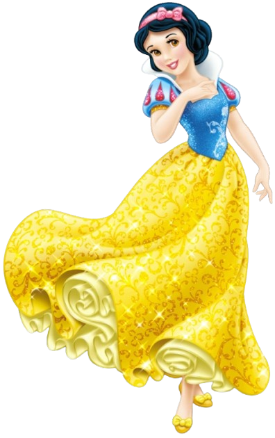
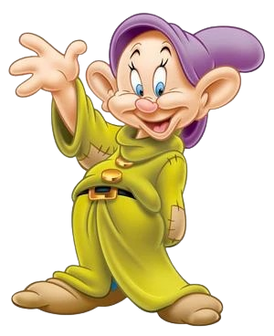
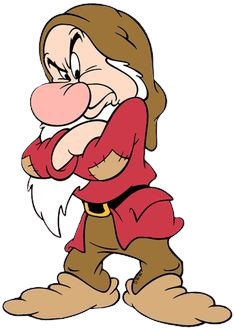
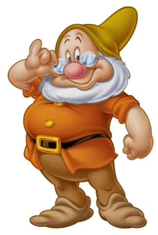
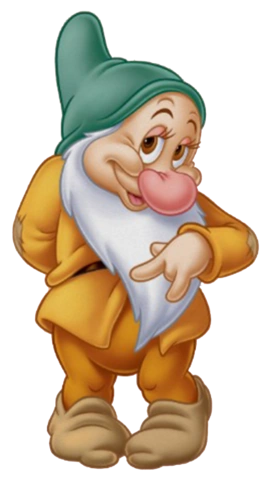

<!DOCTYPE html>
<html lang="en">

<head>
    <meta charset="UTF-8">
    <meta http-equiv="X-UA-Compatible" content="IE=edge">
    <meta name="viewport" content="width=device-width, initial-scale=1.0">
    <title>SnowWhite</title>
    <link rel="stylesheet" href="style.css">
    <link rel="preconnect" href="https://fonts.googleapis.com">
    <link rel="preconnect" href="https://fonts.gstatic.com" crossorigin>
    <link href="https://fonts.googleapis.com/css2?family=Poppins&display=swap" rel="stylesheet">
</head>

<body>
    

</html></div>
        
    </section>

<h6> <strong>BRANCA DE NEVE </strong> </h6>

    

    <p> Um dos contos infantis mais conhecidos na cultura ocidental é Branca de Neve, 
        A história da Branca de Neve tem origem em contos populares europeus e foi registrada pelos Irmãos Grimm em 1812
    <br> a história de uma moça que viveu cercada por sete anões e conseguiu escapar da cruel madrasta.
    A narrativa tem origem alemã e se espalhou para os outros continentes.<br
    A narrativa da Branca de Neve teve origem no folclore alemão há séculos, posteriormente se espalhou pelo continente europeu. Inicialmente a história era propagada através da tradição oral, o que fazia com que a narrativa ganhasse sempre algumas modificações.
    A adaptação norteamericana produzida pelo estúdio de Walt Disney ganhou o nome original de Snow White and the Seven Dwarfs.
    A animação começou a ser planejada em meados dos anos 1930 e acabou por ser lançada em 21 de dezembro de 1937.</p>
    
    <h6> <b>Sobre a História</b> </h6>

    <p> A história de Branca de Neve começa com a jovem princesa, famosa por sua beleza. Sua madrasta, a Rainha Má, se torna muito invejosa quando o espelho mágico, 
        que ela consulta frequentemente, diz que Branca de Neve é mais bonita do que ela. 
        Determinada a ser a mais bela, a rainha manda um caçador levar Branca de Neve para a floresta e matá-la. <br><br> No entanto, o caçador não tem coragem de fazer isso e deixa Branca de Neve escapar.
        Branca de Neve encontra uma cabana na floresta, onde vivem sete anões que trabalham em uma mina.
         Eles a acolhem e, em troca, ela cuida da casa. Enquanto isso, a Rainha Má descobre que Branca de Neve ainda está viva e
          decide matá-la ela mesma, disfarçando-se de várias maneiras. <br> <br> Na primeira tentativa, ela amarra Branca de Neve com um cinto apertado, mas os anões a salvam. 
          Na segunda, a rainha usa um pente envenenado, mas novamente os anões conseguem ajudá-la. Na terceira vez, a rainha oferece uma maçã envenenada, 
          e desta vez Branca de Neve cai em um sono profundo, como se estivesse morta.
        <br> <br> Os anões, tristes, colocam Branca de Neve em um caixão de vidro. Algum tempo depois, um príncipe que já havia se encantado por ela encontra o caixão e, ao dar um beijo, 
        desfaz o feitiço e Branca de Neve desperta. Eles se casam, e a Rainha Má recebe um castigo por sua maldade.
        Essa história mostra que a bondade e a pureza de coração sempre vencem a inveja e a maldade, e que o amor verdadeiro tem o poder de superar qualquer obstáculo.</p>
    <section class="estudante"> <br>
        <h6 class="estudante-titulo"> Quem são os anões da Branca de neve? </h6>
        <div class="estudante-todos">
            <br>
        <span></span>
    <div class="estudante-div-1">
            <div>
            
            <h3 class="estudante-nome">Dunga</h3>
        </div>
        <div>
            
            <h3 class="estudante-nome">Zangado</h3>
        </div>
        <div>
            
            <h3 class="estudante-nome"> Mestre</h3>
        </div>
        <div>
            
            <h3 class="estudante-nome">soneca</h3>
        </div>
    </div>
        <div class="estudante-div-2">
            <div>
            
            <h3 class="estudante-nome">atchim</h3>
            </div>
            <div>
            
            <h3 class="estudante-nome">dengoso</h3>
            </div>
            <div>
            
            <h3 class="estudante-nome">feliz</h3>
            </div>
        </div>

 </div>
    </section>
    <footer class="rodape">
        
    </footer>
</body>
</html>